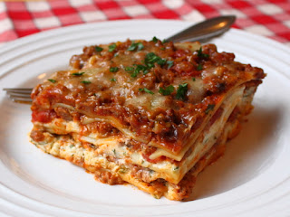

Chef John's Lasagna

Description
As someone who has spent their entire professional life
cooking, no one commands my respect quite like Chef John, author of
Food Wishes. Chef John
is a man with years of experience and knowledge, and none of the ego that
sometimes comes with it. All walk with just the right amount of talk, this
lasagna recipe is a shining example of his food.
Ingredients
- 1 pound of italian sausage
- 1 1/2 pounds of ground beef
- 8 ounces fresh mushrooms, finely chopped
- 1 teaspoon of salt
- 1/2 teaspoon of freshly ground pepper
- 1/2 teaspoon of dried italian seasoning
- 1/4 teaspoon of red pepper flakes
- 6 cups of prepared marinara sauce
- 2 tablespoons of water
- 2 eggs
- 2 pounds of ricotta
- 8 ounces of fresh mozzarella, diced
- 2/3 cups of freshly grated Parmigiano-Reggiano
- 1 pinch of cayenne pepper
- 1/4 cup of fresh chopped parsley
- 16 ounces of lasagna noodles
- 1/2 cup freshly grated Parmigiano-Reggiano
Steps
- Brown sausage and ground beef in a medium stockpot on low,
breaking up meat as you go. Meat is cooked when brown and crumbly.
Stir in mushrooms, salt, pepper, red pepper flakes, and italian seasoning.
Cook on medium heat until mushrooms have released all their liquid and the
bottom of the pan is completely dry.
- Add prepared marinara to meat mixture. Turn heat to low and simmer until
meat is extremely tender, about 2 hours. If the sauce becomes too thick,
add water until it is the desired thickness. Skim excess fat from the top of
sauce, then taste and adjust seasonings.
- Preheat oven to 375 degrees.
- In a large bowl, beat eggs and add 2/3 cups of Parmigiano-Reggiano
cheese, mozarella cheese, and ricotta cheese. Season mixture with
salt, pepper, and cayenne. Add chopped parsley.
- Bring a large pot of salted water to a boil. Add lasagna noodles
and cook until soft but firm to bite. Drain and rinse noodles, set
aside in a large bowl of cold water.
- Spread 1/4th of sauce into the bottom of a 10x15 inch baking pan.
Top with 1/3rd of the noodles, and then spread 1/2 of cheese mixture
on top. Spread 1/4th of sauce over the cheese, lay 1/3rd of the noodles
on top of the sauce, then spread the remainder of the cheese mixture.
Spread 1/4th of the sauce over the cheese, then carefully tap the bottom
of the pan on a surface to settle the layers. Now top the dish with the
remaining Parmigiano-Reggiano and mozzarella.
- Cover casserole with aluminum foil, being careful to not touch the
top with the foil. Place in the oven on a sheet tray to catch spills.
- Cook in preheated oven for 30 minutes, then remove foil and cook until
golden brown and bubbling (about 20-30 minutes). Make sure to let the
dish rest for at least 30 minutes or it will fall apart on the plate.
- Enjoy with loved ones!